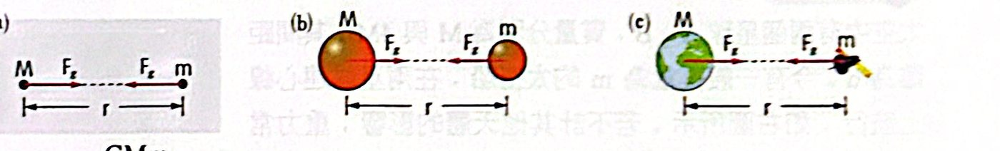
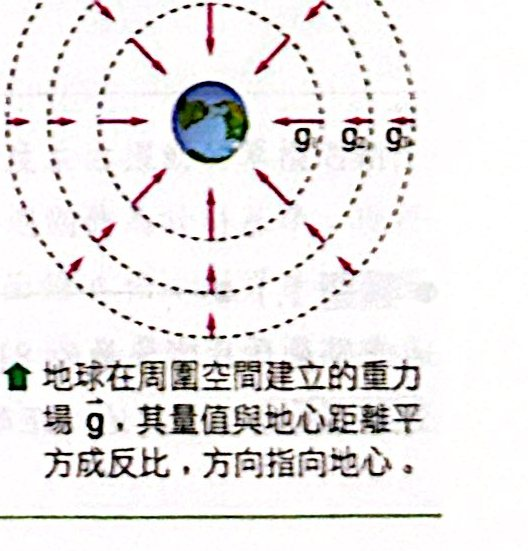
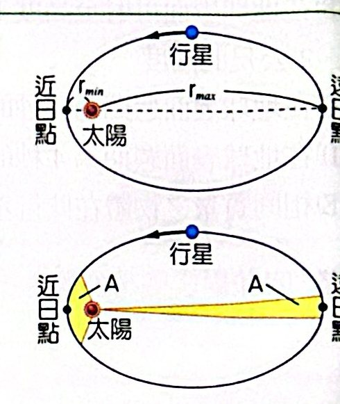
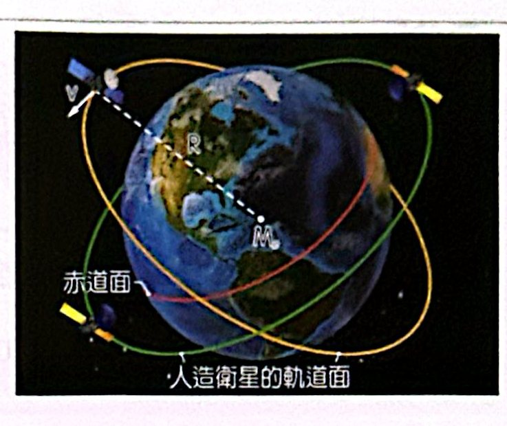
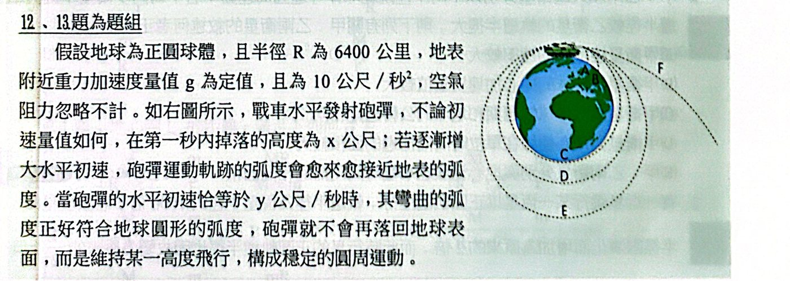
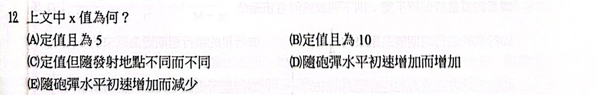
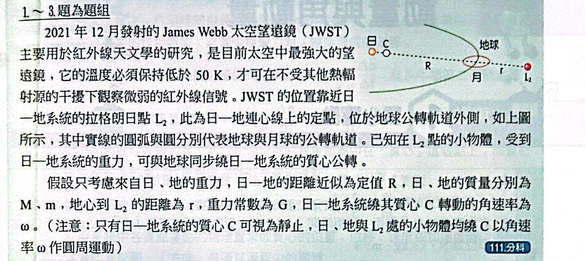
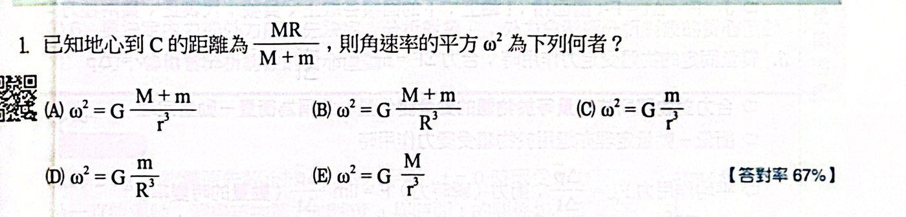

焦點 1 萬有引力定律
〇、先備工具：本單元只用到這三樣舊東西
| 工具 |
內容 |
本單元拿來做什麼 |
| 牛頓第二定律 |
F ＝ ma |
由力求加速度（g、衛星的 a） |
| 牛頓第三定律 |
甲拉乙的力 ＝ 乙拉甲的力，大小相等、方向相反 |
說明引力為什麼 ∝ M×m |
| 等速圓周運動 |
向心加速度 a ＝ v²/r ＝ 4π²r/T²；需要的向心力 F ＝ ma |
行星、衛星繞圈 |
- 4π²r/T² 從哪來：繞一圈的路程 2πr、花時間 T ⇒ v ＝ 2πr/T，代入 v²/r ＝ (2πr/T)²/r ＝ 4π²r/T²。
- 角速度 ω ＝ 2π/T：轉一圈是 2π 弧度（360°），花時間 T。
- 「向心力」不是一種新的力，而是「某個力剛好指向圓心」時的稱呼；本單元這個力就是萬有引力。
本單元常用的數字（代數字時查這裡）：
| 量 |
符號 |
數值 |
| 重力常數 |
G |
6.67×10−11 N·m²/kg² |
| 地球質量 |
Me |
6.0×1024 kg |
| 地球半徑 |
Re |
6.4×106 m（6400 km） |
| 地表重力加速度 |
g |
9.8 m/s² |
| 兩者相乘 |
GMe |
≈ 4.0×1014 N·m²/kg |
一、萬有引力定律
要解決的問題：蘋果會往下掉、月球會繞地球轉——是不是同一種力？
- 1686 年牛頓提出：任兩個有質量的物體都互相吸引，稱為萬有引力（又稱重力）。
- 力的大小由兩件事決定：
- 兩物體質量相乘 M×m 愈大，力愈大
- 距離 r 愈大，力愈小，而且是平方地變小：r 變 2 倍，力變 1/4
- 合起來寫成式子，前面補一個比例常數 G：
Fg ＝ GMm / r²萬有引力定律為什麼？
① 先看懂每個符號
| 符號 |
意思 |
單位 |
| Fg |
兩物體互相吸引的力（甲拉乙、乙拉甲，一樣大） |
N |
| G |
重力常數，宇宙中固定不變的數 6.67×10−11 |
N·m²/kg² |
| M、m |
兩個物體各自的質量 |
kg |
| r |
兩物體中心之間的距離 |
m |
② 白話翻譯
「引力 ＝ 一個很小的常數 × 兩個質量相乘 ÷ 距離的平方。」
- 分子：M、m 任一個變 2 倍，F 變 2 倍。
- 分母：r 有平方，r 變 2 倍，F 變 1/2² ＝ 1/4；r 變 3 倍，F 變 1/9。
③ 推導（一）為什麼 ∝ M × m？（只用牛頓第二、第三定律）
- 實驗事實：不計空氣阻力，輕重物體落下的加速度都是 g。
- 由 F ＝ ma：要讓 a 一樣，質量 m 大的物體受力就要成比例地大 ⇒ 地球拉物體的力 ∝ 被拉物體的質量 m。
- 反過來看：物體也在拉地球，這時「被拉的」是地球，同理這個力 ∝ 地球質量 M。
- 牛頓第三定律：這兩個力大小相等，是同一個數字 ⇒ 它必須同時 ∝ m 又 ∝ M ⇒ F ∝ Mm。
③ 推導（二）為什麼 ∝ 1/r²？（牛頓的月球驗證）
- 已知：地表離地心 1 個地球半徑，那裡 g ＝ 9.8 m/s²；月球離地心約 60 個地球半徑。
- 假設引力 ∝ 1/r²：月球那裡的加速度應是 9.8 ÷ 60² ≈ 2.7×10−3 m/s²。
- 實際量：月球繞地球做圓周運動，r ≈ 3.84×108 m、T ≈ 27.3 天，代入先備工具 a ＝ 4π²r/T² ≈ 2.7×10−3 m/s²。
- 兩種方法各自算出的數字一樣 ⇒ 平方反比的假設成立；而且讓蘋果落地、讓月球繞圈的是同一種力。
（焦點 2 學完克卜勒第三定律後，還有第二個證據，放在那裡的公式框。）
直覺圖像：為什麼是「平方」？（類比，不是證明）
圖解
直覺圖像（類比）：距離變 2 倍，影響要攤開的面積變 2² ＝ 4 倍，所以每一點分到的只剩 1/4。④ 代數字感受大小
- 兩個 60 kg 的同學相距 1 m：F ＝ 6.67×10−11 × 60 × 60 ÷ 1² ≈ 2.4×10−7 N——比一粒灰塵的重量還小，所以感覺不到。
- 地球拉一個 60 kg 的人（r ＝ 地球半徑）：F ＝ 4.0×1014 × 60 ÷ (6.4×106)² ≈ 586 N——剛好 ≈ 60 × 9.8，就是他的體重。
- 差別在哪：地球質量大了 1023 倍，G 再小也被撐起來了。
G 是什麼
- 比例常數 G ≈ 6.67×10−11 N·m²/kg²，由卡文迪西用扭秤實驗測得。
- 單位怎麼來：G ＝ F·r²/(Mm) ⇒ N·m²/kg²。
⑤ 常見錯誤
- r 量到物體表面：要量到中心（下一段說明）。
- 忘記平方：距離 2 倍，力是 1/4 不是 1/2。
- 以為大的拉小的比較大力：第三定律，兩邊一樣大；只是小的那個質量小，所以加速度比較大。

(a) 兩質點 (b) 兩均勻球體 (c) 地球與物體
距離 r 要從哪裡量到哪裡？
- 公式原本是給質點用的（質點：大小可以忽略、看成一個點的物體），如圖(a)。
- 兩物體不是點怎麼辦？牛頓證明：均勻球體（或球殼）吸引球外物體時，效果和「質量全部集中在球心」一樣（證明要用微積分，高中直接用結論）。
- 所以：兩顆均勻球 ⇒ r ＝ 球心距，如圖(b)；地球與地面外的物體 ⇒ r ＝ 物體到地心的距離（r ≥ 地球半徑），如圖(c)。
- 好幾個物體同時吸引 ⇒ 一對一對分開算，再做向量和。
二、地表附近的重力
要解決的問題：地球拉你的力，就是你的「重量」mg。把上一節的引力公式和 mg 畫上等號，就能知道 g 由什麼決定。
- 物體在地表上方高度 h 處，到地心的距離 r ＝ Re ＋ h（r 量到地心，上一節的規則）。
- 重量 ＝ 地球引力（忽略地球自轉的小影響）：mg ＝ GMem/r²。
- 兩邊都有 m，可以消掉 ⇒ g 與物體質量無關。
g ＝ GMe/(Re ＋ h)²；地表 g ＝ GMe/Re²重力加速度為什麼？
① 先看懂每個符號
| 符號 |
意思 |
數值／單位 |
| g |
重力加速度：只受重力時速度每秒增加多少；也 ＝ 每 1 kg 受幾牛頓的重力 |
地表 9.8 m/s² |
| Me |
地球質量（下標 e ＝ earth） |
6.0×1024 kg |
| Re |
地球半徑 |
6.4×106 m |
| h |
物體離「地面」的高度 |
m |
| Re ＋ h |
物體離「地心」的距離，就是萬有引力公式裡的 r |
m |
② 白話翻譯
「某個高度的 g ＝（G × 地球質量）÷（到地心距離）²。」
⇒ g 只跟「地球有多重」和「你離地心多遠」有關，跟你自己多重無關。
③ 推導：每一步為什麼可以這樣做
- 重量 W ＝ mg：這是 g 的定義（F ＝ ma 中，只受重力時的 a 就叫 g）。
- 重量的真正來源是地球的萬有引力：F ＝ GMem/r²，其中 r ＝ Re ＋ h。
- 這是同一個力的兩種寫法，所以可以畫等號：mg ＝ GMem/(Re ＋ h)²。
- 等號兩邊都乘了 m ⇒ 兩邊同除以 m（「約去 m」）⇒ g ＝ GMe/(Re ＋ h)²。
- 站在地面上 h ＝ 0 ⇒ g ＝ GMe/Re²。
④ 代數字：這條式子真的算得出 9.8 嗎？
- GMe ＝ 6.67×10−11 × 6.0×1024 ≈ 4.0×1014
- Re² ＝ (6.4×106)² ≈ 4.1×1013
- g ＝ 4.0×1014 ÷ 4.1×1013 ≈ 9.8 m/s² ✔——課本上的 9.8 就是這樣來的。
高度愈高，g 怎麼變？
分母是「到地心距離」的平方 ⇒ g 和（到地心距離）² 成反比：
| 位置 |
離地心 |
g 是地表的幾倍 |
g（m/s²） |
| 地面 |
1 Re |
1 |
9.8 |
| 台北 101 頂（h ≈ 0.5 km） |
≈ 1.0001 Re |
≈ 0.9998 |
幾乎不變 |
| 國際太空站（h ≈ 400 km） |
≈ 1.06 Re |
≈ 0.89 |
≈ 8.7 |
| h ＝ Re |
2 Re |
1/4 |
≈ 2.45 |
| h ＝ 2Re |
3 Re |
1/9 |
≈ 1.09 |
圖解
g 隨「到地心的距離」平方反比遞減：距離 2 倍，g 剩 1/4；3 倍剩 1/9。地表附近幾公里的高度在圖上連一根線的寬度都不到，所以 g 幾乎不變。
- 日常的高度和 6400 km 比起來太小 ⇒ 地面附近 g 當成定值 9.8；要到幾百公里以上才看得出差別。
- 太空站上 g 仍有地表的 9 成——太空人「失重」不是因為沒有重力（第四節解釋）。
由式子讀出三件事
- 式子裡沒有 m ⇒ 輕重物體落下一樣快（伽利略觀察到的現象，在這裡得到原因）。
- g 只看「地球質量」與「離地心多遠」。
- 地表附近 Re ＋ h ≈ Re ⇒ g 幾乎是定值。
黃金代換 GMe ＝ gRe²
- 由來：地表的 g ＝ GMe/Re²，兩邊同乘 Re²。
- 為什麼好用：G（6.67×10−11）和 Me（6.0×1024）都是難記的極小／極大數，相乘之後可以換成熟悉的 g（9.8）和 Re（6400 km）。
- 示範：求 h ＝ Re 處的 g′
- g′ ＝ GMe/(Re ＋ Re)² ＝ GMe/(4Re²)
- 把 GMe 換成 gRe²：g′ ＝ gRe²/(4Re²)
- Re² 上下約掉：g′ ＝ g/4——連數字都不用代。
⑤ 常見錯誤
- 把 h 當成 r：r 一定量到地心，＝ Re ＋ h。
- 忘記平方：離地心 2 倍，g 是 1/4 不是 1/2。
- 以為重的東西 g 比較大：m 已經約掉了。
比較不同星球：把地球換成任一星球（質量 M、半徑 R），表面 g ＝ GM/R²。如果題目給的是密度，再用「質量 ＝ 密度 × 體積」把 M 換掉：
g ∝ M/R² ∝ ρR比較不同星球表面為什麼？
① 先看懂每個符號
| 符號 |
意思 |
| ∝ |
「成正比」：左邊會跟著右邊變同樣的倍數（常數 G 一樣，比較時可以先不寫） |
| M、R |
星球的質量、半徑 |
| ρ |
密度：每立方公尺有幾公斤（kg/m³） |
② 白話翻譯
- g ∝ M/R²：星球愈重，表面 g 愈大；星球愈大（站得離中心愈遠），g 愈小。
- g ∝ ρR：密度一樣時，星球愈大，表面 g 反而愈大（因為質量 ∝ R³，長得比 R² 快）。
③ 推導
- 表面 g ＝ GM/R²（上一個公式框，把地球換成這顆星）
- 球的體積是 (4/3)πR³ ⇒ M ＝ 密度 × 體積 ＝ ρ·(4/3)πR³
- 代入：g ＝ G·ρ·(4/3)πR³/R² ＝ (4/3)πG·ρR
- (4/3)πG 是固定的數 ⇒ g ∝ ρR
④ 代數字：月球表面的 g
月球質量約地球的 1/81，半徑約地球的 0.27 倍：
g月/g地 ＝ (1/81) ÷ (0.27)² ＝ (1/81) ÷ 0.073 ≈ 1/6 ⇒ 月球上的 g ≈ 1.6 m/s²，跳起來的高度約是地球上的 6 倍。
怎麼寫比例式
g星/g地 ＝ (M星/M地) ÷ (R星/R地)²
例：質量 2 倍、半徑 2 倍 ⇒ g ＝ 2 ÷ 2² ＝ 1/2 倍。
| 題目給 |
用 |
| 質量比、半徑比 |
g ∝ M/R² |
| 密度比、半徑比 |
g ∝ ρR |
換到別的星球，什麼跟著變？（判斷法：公式裡有沒有 g）
| 量 |
公式 |
會不會變 |
| 質量 |
m |
不變（物質多少不因地點改變） |
| 重量 |
mg |
變，∝ g |
| 單擺週期 |
2π√(ℓ/g) |
變，∝ 1/√g（g 變 1/4 ⇒ 週期變 2 倍） |
| 彈簧振子週期 |
2π√(m/k) |
不變（式子裡沒有 g） |
| 同初速斜拋最大高度 |
v²sin²θ/(2g) |
變，∝ 1/g |
重力場
- F ＝ GMm/r² 裡有 m：同一個位置放不同物體，受力就不同，不方便描述「這個位置」本身。
- 改問「每 1 kg 放在這裡受多少力」：F/m，m 就消掉了，只剩地球和位置 ⇒ 這個量叫重力場 g（單位 N/kg）。
- 地球周圍每一點都有自己的 g（有大小、有方向）；物體放進去，受力就是 F ＝ mg。
g ＝ Fg/m ＝ GMe/r²（r ≥ Re）重力場為什麼？
① 先看懂每個符號
| 符號 |
意思 |
| g（重力場） |
放在這一點的每 1 kg 受到多少重力，單位 N/kg；有方向（指向地心） |
| Fg |
放進來的物體實際受到的重力 |
| r |
這一點到地心的距離，r ≥ Re（在地面或地面以外） |
② 白話翻譯
「地球在周圍每一點都事先『準備好』一個拉力強度 g；不管放什麼東西進來，受力都是 m × g。」
例：地表 g ＝ 9.8 N/kg ⇒ 1 kg 受 9.8 N，5 kg 受 49 N。
③ 為什麼它和重力加速度數值相同
重力場的定義 g ＝ F/m；只受重力時 F ＝ ma ⇒ a ＝ F/m。兩者是同一個數（N/kg ＝ m/s²）。
重力場的三個性質
- 方向：指向地心
- 大小：GMe/r²，∝ 1/r²（r 從地心量，r ≥ Re）
- 好幾個星體同時存在：某點的 g ＝ 各星體的 g 向量相加
④ 代數字：地球和月球之間哪裡重力場為零？
- 地球拉向地球、月球拉向月球，方向相反 ⇒ 兩者大小相等的地方抵消。
- 設離地心 x、地月距離 D：GMe/x² ＝ GM月/(D − x)²
- M月 ＝ Me/81 ⇒ (D − x)/x ＝ √(1/81) ＝ 1/9 ⇒ x ＝ 0.9D
- 結論：在地月連線、離地心 9/10 處，重力場為零（偏向質量小的月球那一側）。
預告
之後的電場 E ＝ F/q 是完全相同的想法：把「受力」除以「被作用的那個量」，得到只屬於空間位置的量。

地球的重力場：量值與距離平方成反比，方向指向地心
焦點 2 行星與人造衛星的運動
三、克卜勒行星運動三定律
先講清楚來龍去脈
- 克卜勒（比牛頓早約 80 年）整理第谷多年的行星觀測資料，歸納出三條規律——他知道「是這樣」，但不知道「為什麼」。
- 牛頓用焦點 1 的萬有引力 ＋ 運動定律，把三條全部推了出來 ⇒ 這是萬有引力正確的有力證據。
- 三條定律各回答一個問題：
| 定律 |
回答的問題 |
一句話 |
| 第一（軌道定律） |
軌道是什麼形狀？ |
橢圓，太陽在一個焦點 |
| 第二（面積定律） |
同一條軌道上哪裡快？ |
近日點快、遠日點慢 |
| 第三（週期定律） |
不同行星的軌道大小與週期？ |
R³/T² 都相同 |

橢圓軌道與面積定律
先認識橢圓（第一定律要用的名詞）
- 橢圓：像被壓扁的圓。裡面有兩個特別的點叫焦點，不在正中央，而是左右各偏一邊。
- 長軸：橢圓最長的那條直徑；半長軸 a ＝ 長軸的一半。
- 圓是特例：兩個焦點重合在圓心，半長軸就是半徑。
圖解
近日點、太陽、遠日點都在長軸上，太陽夾在中間 ⇒ rmax ＋ rmin ＝ 長軸 ＝ 2a。橢圓愈扁，兩個焦點離中心愈遠；圓是兩焦點重合的特例。
第一定律（軌道定律）
- 行星的軌道是橢圓，太陽在其中一個焦點上。
- 太陽偏在一邊 ⇒ 行星離太陽的距離會變：最近點叫近日點（距離 rmin），最遠點叫遠日點（距離 rmax）。
- 近日點、遠日點都在長軸的兩端，太陽夾在中間 ⇒ 近日距 ＋ 遠日距 ＝ 長軸。
第一定律：R ＝ (rmax ＋ rmin)/2 ＝ 半長軸 a軌道定律為什麼？
① 先看懂每個符號
| 符號 |
意思 |
| rmin |
近日距：近日點到太陽的距離 |
| rmax |
遠日距：遠日點到太陽的距離 |
| a |
半長軸：長軸的一半 |
| R |
「平均軌道半徑」：把橢圓軌道拿去用第三定律時代入的 R |
② 白話翻譯
「橢圓軌道的平均半徑，就是最近距離和最遠距離的平均。」
③ 為什麼平均半徑是這個？
- 近日點、太陽、遠日點三者都在長軸上，太陽夾在中間（見上圖）。
- 所以 rmin ＋ rmax ＝ 整條長軸 ＝ 2a ⇒ 除以 2 ＝ 半長軸 a。
- 之後第三定律遇到橢圓軌道，「R」一律代半長軸。
④ 代數字：地球軌道
近日距 1.47×1011 m、遠日距 1.52×1011 m ⇒ R ＝ (1.47 ＋ 1.52)/2 × 1011 ≈ 1.50×1011 m。
兩者只差約 3%，所以地球軌道非常接近圓——高中常把行星軌道當成圓來算，R³/T² 的結果一樣成立。
⑤ 常見錯誤
- 太陽不在橢圓中心，是在焦點。
- 第三定律代的是半長軸 a，不是近日距或遠日距。
第二定律（面積定律）
- 把太陽和行星連一條線，行星移動時，這條線像雨刷一樣「掃」過一塊面積。
- 定律：相同時間內掃過的面積相同。
- 推論：近日點時連線短，要在同樣時間掃出同樣大的面積，走過的弧就得長 ⇒ 跑得快；遠日點相反 ⇒ 近日點最快、遠日點最慢。
動畫解（可播放、可拖曳時間軸）
每一塊扇形都只花 T/12 的時間。近日點附近的扇形又短又胖、遠日點附近的又長又瘦，但 12 塊面積都一樣 ⇒ 近日點跑得快、遠日點跑得慢。
第二定律：ΔA/Δt ＝ 定值面積定律為什麼？
① 先看懂每個符號
| 符號 |
意思 |
| ΔA |
一段時間內，太陽–行星連線掃過的面積 |
| Δt |
那段時間 |
| ΔA/Δt |
面積速率：每秒掃過多少面積 |
② 白話翻譯
「不管行星在軌道哪裡，每一秒掃過的面積都一樣大。」
③ 為什麼？（只用幾何：三角形面積 ＝ ½ × 底 × 高）
圖解
① 沒有力：AB ＝ BC 等長，△SAB、△SBC 等底同高 ⇒ 面積相等。② 太陽在 B 點拉一下，方向沿 BS，所以落點從 C 移到 C′，而 CC′ 和 SB 平行。③ △SBC 與 △SBC′ 共用底 SB、頂點在同一條平行線上 ⇒ 高相同 ⇒ 面積相等。
- 先想沒有引力：行星在相等時間內走等長的直線 AB、BC。從太陽 S 看，三角形 SAB 和 SBC 的底 AB ＝ BC、高（S 到這條直線的距離）也相同 ⇒ 面積相等。
- 再加上引力：在 B 點太陽拉一下，這一拉的方向沿著 BS 指向太陽，所以行星的落點從 C 被拉到 C′，而 CC′ 與 BS 平行。
- 三角形 SBC 與 SBC′ 共用底 SB，頂點 C、C′ 在一條平行於 SB 的線上 ⇒ 高相同 ⇒ 面積相同。
- 所以每段相等時間掃過的面積都一樣。整個論證只用到一件事：引力永遠指向太陽。
近日點、遠日點的速率比（常考）
- 在近日點和遠日點，速度剛好和連線垂直。
- 很短的時間 Δt 內掃過一個細長三角形：底 ＝ r（連線長）、高 ＝ vΔt（走過的距離）⇒ 面積 ＝ ½·r·vΔt。
- 面積速率相同：½r近v近 ＝ ½r遠v遠 ⇒ r近v近 ＝ r遠v遠
- ⇒ v近/v遠 ＝ r遠/r近：距離差幾倍，速率就反過來差幾倍。
④ 代數字
地球：r遠/r近 ＝ 1.52/1.47 ≈ 1.034 ⇒ 地球在近日點（每年 1 月初）比遠日點快約 3.4%。
另一種說法（第 6 單元會學）
引力沿著連線 ⇒ 對太陽的力矩 ＝ 0 ⇒ 角動量守恆 ⇒ ΔA/Δt ＝ L/(2m) 為定值。現在先記幾何版即可。
⑤ 常見錯誤
- 只能比較同一顆行星在自己軌道上的不同位置；不同行星的面積速率不同（圓軌道時 ＝ πR²/T，第四節會看到它 ∝ √R）。
- r近v近 ＝ r遠v遠 只在近日點、遠日點（速度垂直連線）直接成立；其他位置要用垂直連線的速度分量。
第三定律（週期定律）
- 離太陽愈遠的行星，繞一圈愈久。
- 精確的關係：軌道半徑的立方 ÷ 週期的平方，對繞太陽的每顆行星都是同一個數 K。
- K 可以用萬有引力推出來，推完就知道 K 由什麼決定：
第三定律：R³/T² ＝ GM/4π² ＝ 常數 K週期定律為什麼？
① 先看懂每個符號
| 符號 |
意思 |
| R |
軌道半徑（橢圓時用半長軸） |
| T |
週期：繞一圈花的時間 |
| M |
中心星體（被繞的那一顆，例如太陽）的質量 |
| K |
比值 R³/T²；繞同一顆中心星的天體都一樣 |
② 白話翻譯
「繞同一顆星的天體，軌道半徑的立方和週期的平方成正比。」
例：半徑變 4 倍 ⇒ R³ 變 64 倍 ⇒ T² 也要變 64 倍 ⇒ T 變 8 倍。
③ 推導（把軌道當成圓）
- 為什麼用 m·4π²R/T² 這種向心力寫法：我們要找 R 和 T 的關係，所以選含 T 的那一種（先備工具）。
- 引力提供向心力：GMm/R² ＝ m·4π²R/T²
- 兩邊都有 m ⇒ 約掉：GM/R² ＝ 4π²R/T²
- 把 R 都移到左邊、T 移到右邊（兩邊同乘 R²T²/4π²）⇒ R³/T² ＝ GM/(4π²)
由式子讀出四件事
- K 只含 G 和中心星體質量 M ⇒ 繞同一顆中心星的天體共用一個 K；繞太陽的 K 和繞地球的 K 不同，不能混用。
- 繞行物體的質量 m 約掉了 ⇒ 大衛星、小衛星在同一軌道上週期相同。
- 反過來用：量到某衛星的 R、T，就能「秤」出中心星質量 M ＝ 4π²R³/(GT²)。
- 橢圓軌道：R 代半長軸（第一定律）。
④ 代數字：用「天文單位、年」最好算
- 把地球軌道半徑當 1 單位（1 AU）、週期當 1 年 ⇒ 繞太陽的 K ＝ 1³/1² ＝ 1。
- 木星 R ≈ 5.2 AU ⇒ T² ＝ 5.2³ ≈ 140.6 ⇒ T ≈ 11.9 年（實際 11.86 年，吻合）。
平方反比的第二個證據（焦點 1 預告的）
圓軌道 a ＝ 4π²R/T²；第三定律說 T² ∝ R³ ⇒ a ∝ R/R³ ＝ 1/R²。
行星的加速度 ∝ 1/R²，力 ＝ ma 也就 ∝ 1/R² ⇒ 只有平方反比的引力，才會讓行星遵守週期定律。
⑤ 常見錯誤
- 拿繞地球的月球和繞太陽的地球套同一個 K（中心星不同）。
- 比例寫反：是 R³ ∝ T²，所以 T ∝ R3/2、R ∝ T2/3。
四、行星與人造衛星的圓周運動
要解決的問題：一顆衛星在半徑 R 的圓軌道上，速率、週期、加速度各是多少？
- 唯一的想法：萬有引力 ＝ 向心力（衛星只受中心星的引力，而這個力剛好指向圓心）。
- 把向心力寫成不同形式，就分別解出 v、T、a。
- 衛星質量 m 每次都會約掉 ⇒ 結果只由中心星質量 M 和軌道半徑 R 決定。
v ＝ √(GM/R)，T ＝ 2π√(R³/GM)，a ＝ GM/R²萬有引力 ＝ 向心力為什麼？
① 先看懂每個符號
| 符號 |
意思 |
| M |
中心星體質量（衛星繞地球時就是 Me） |
| R |
衛星到中心星球心的距離（＝ 地球半徑 ＋ 離地高度） |
| v |
衛星速率 |
| T |
繞一圈的時間 |
| a |
向心加速度（＝ 那個位置的重力場 g） |
② 白話翻譯
- v ＝ √(GM/R)：軌道愈高（R 大），跑得愈慢。
- T ＝ 2π√(R³/GM)：軌道愈高，繞一圈愈久，而且久得很快（R3/2）。
- a ＝ GM/R²：就是那個高度的 g。
③ 推導（三行都從同一個等號出發）
向心力有三種寫法（先備工具），題目問什麼就選哪一種：
| 向心力寫成 |
等式 |
約掉 m、整理後 |
| mv²/R |
GMm/R² ＝ mv²/R |
v² ＝ GM/R ⇒ v ＝ √(GM/R) |
| m·4π²R/T² |
GMm/R² ＝ m·4π²R/T² |
T² ＝ 4π²R³/GM ⇒ T ＝ 2π√(R³/GM) |
| ma |
GMm/R² ＝ ma |
a ＝ GM/R² |
反直覺：軌道愈高，跑得愈慢——為什麼？
- R 大 ⇒ 引力 GMm/R² 小。
- 引力就是向心力 mv²/R；向心力小 ⇒ 只能「彎住」較小的速率（v² ＝ GM/R）。
- 速率變小、要繞的圈又變大 ⇒ 週期大幅變長。
圖解
同一顆地球的兩條圓軌道，半徑差 4 倍：外圈引力只剩 1/16，只能維持一半的速率，繞一圈的路又是 4 倍長，所以週期是 8 倍。
| 量 |
與 R 的關係 |
R 變大時 |
| a |
∝ 1/R² |
變小 |
| v |
∝ 1/√R |
變小 |
| ω ＝ 2π/T |
∝ R−3/2 |
變小 |
| T |
∝ R3/2 |
變大 |
| 面積速率 ½√(GMR) |
∝ √R |
變大（唯一變大的「速率」） |
面積速率怎麼來：一個週期掃過整個圓 πR²，除以 T；把 T ＝ 2πR/v 代入得 ½Rv，再把 v 換成 √(GM/R) ⇒ ½√(GMR)。
④ 代數字：太空站 vs 月球
|
太空站（離地 400 km） |
月球 |
| R |
6.8×106 m |
3.84×108 m |
| v ＝ √(4.0×1014/R) |
≈ 7.7 km/s |
≈ 1.0 km/s |
| T ＝ 2πR/v |
≈ 93 分鐘 |
≈ 27 天 |
月球比太空站高了約 56 倍，速率卻只剩約 1/7、週期長了約 400 倍——和 v ∝ 1/√R、T ∝ R3/2 吻合。
太空人為什麼「失重」？
- 太空人仍然受重力——正是這個引力提供向心力（太空站高度的 g 仍約地表的 9 成）。
- 太空人和太空船有同一個加速度 GM/R²，一起「往地球掉」；只是水平速度夠快，一直掉不到地面。
- 兩者一起掉，地板不用撐他 ⇒ 沒有支撐力，所以「感覺」不到重量。
⑤ 常見錯誤
- R 代離地高度：要代「離地心」＝ Re ＋ h。
- 以為要飛高就要飛快：同一中心星的圓軌道，高的反而慢。
第一宇宙速度：衛星貼著地表飛（R ≈ Re）是最低的圓軌道，那裡的重力加速度就是 g：
動畫解（可播放、可拖曳時間軸）
從高山水平射出三顆砲彈（慢、較快、剛好）。地球是圓的，砲彈往前飛時地面也在「彎下去」；速度剛好讓兩者一樣多時（綠），砲彈永遠落不到地面，就成了繞地球的衛星。
表面衛星：v ＝ √(gRe) ≈ 7.9 km/s第一宇宙速度為什麼？
① 先看懂每個符號
| 符號 |
意思 |
| v |
貼著地面繞地球做圓周運動所需的速率 |
| g |
地表重力加速度 9.8 m/s² |
| Re |
地球半徑 6.4×106 m |
② 白話翻譯
「想在地面附近繞地球一圈不掉下來，速率要約每秒 7.9 公里。」
- 它是所有圓軌道中最快的（R 最小 ⇒ v 最大）；也是發射衛星進入軌道所需的最低速率。
③ 推導
- 貼地飛 ⇒ 受的引力就是重量 mg；需要的向心力是 mv²/Re。
- 引力提供向心力：mg ＝ mv²/Re
- 約掉 m，兩邊乘 Re：v² ＝ gRe ⇒ v ＝ √(gRe)
- 也可以由 v ＝ √(GM/R) 配合黃金代換 GM ＝ gRe² 得到同一個結果。
④ 代數字
v ＝ √(9.8 × 6.4×106) ＝ √(6.3×107) ≈ 7.9×103 m/s ≈ 7.9 km/s（約音速的 23 倍）。
繞一圈 T ＝ 2πRe/v ≈ 5.1×103 s ≈ 85 分鐘。
直覺：牛頓的大砲（看上面的動畫）
- 從高處水平射出砲彈，水平、鉛直分開看：不管初速多少，第 1 秒都往下掉 ½gt² ≈ 5 m。
- 地球是圓的：往前走一段距離，地面本身也會「彎下去」。
- 初速快到「地面彎下去的量」＝「砲彈掉下的量」⇒ 砲彈永遠落不到地 ⇒ 繞地球轉。這個速度約 7.9 km/s（每秒前進 7.9 km，地面恰好彎下約 5 m）。
同步衛星
- 定義：週期 ＝ 地球自轉週期 24 小時、在赤道上空、和地球同向轉 ⇒ 從地面看它停在天空同一點不動（適合通訊、氣象）。
- 為什麼一定在赤道上空：引力指向地心，所以衛星的軌道面一定通過地心（下圖）；要一直待在地面某點正上方，那一點隨自轉畫出的圓也必須以地心為圓心——只有赤道符合。
- 為什麼高度固定：T 規定是 24 小時，由 R³ ＝ GMT²/4π² ＝ 4.0×1014 × (8.6×104)² ÷ 39.5 ≈ 7.5×1022 ⇒ R ≈ 4.2×107 m（離地心，約 6.6 個地球半徑），扣掉地球半徑，離地約 3.6 萬公里。

人造衛星的軌道面通過地心
會合週期
要解決的問題：兩顆衛星繞同一顆星，多久「相遇」（和中心星排成一直線）一次？
- 這和兩人在操場同向跑步、快的人追上慢的人是同一件事：看的是角速度的差。
動畫解（可播放、可拖曳時間軸）
內圈週期 T1、外圈 T2 ＝ 3T1。內圈每多跑滿一整圈就追上外圈一次：1/t ＝ 1/T1 − 1/T2 ⇒ t ＝ 1.5T1。
會合週期：同向 1/t ＝ 1/T1 − 1/T2；反向 1/t ＝ 1/T1 ＋ 1/T2追趕問題為什麼？
① 先看懂每個符號
| 符號 |
意思 |
| T1 |
較快（內圈、週期短）那顆的週期 |
| T2 |
較慢（外圈、週期長）那顆的週期 |
| t |
會合週期：從一次相遇到下一次相遇的時間 |
② 白話翻譯
「1/T 就是『每單位時間轉幾圈』。同向時，快的每單位時間比慢的多轉 (1/T1 − 1/T2) 圈；多轉滿 1 圈就相遇一次。」
③ 推導（同向）
- 角速度 ω ＝ 2π/T（先備工具）。
- 每秒快的比慢的多轉 (ω1 − ω2)。
- 多轉滿一整圈 2π 就再追上一次 ⇒ (ω1 − ω2)·t ＝ 2π。
- 代入 ω ＝ 2π/T，兩邊除以 2π ⇒ 1/T1 − 1/T2 ＝ 1/t。
反向
兩者迎面靠近，相對角速度是 ω1 ＋ ω2 ⇒ 1/T1 ＋ 1/T2 ＝ 1/t。
檢查式子合不合理
- 外圈不動（T2 → ∞）：1/t ＝ 1/T1 ⇒ t ＝ T1，轉一圈就回到它旁邊 ✔
- 兩者一樣快（T1 ＝ T2）：1/t ＝ 0 ⇒ 永遠追不上 ✔
- 上面動畫：T2 ＝ 3T1 ⇒ 1/t ＝ 1/T1 − 1/(3T1) ＝ 2/(3T1) ⇒ t ＝ 1.5T1 ✔
④ 代數字：時鐘
分針 T1 ＝ 1 小時、時針 T2 ＝ 12 小時，同向 ⇒ 1/t ＝ 1 − 1/12 ＝ 11/12 ⇒ t ＝ 12/11 小時（約 1 小時 5.5 分），不是剛好 1 小時。
解題步驟
- 由相遇條件求出未知的週期。
- 再用第四節的比例：R ∝ T2/3、v ∝ 1/√R、a ∝ 1/R² 換成題目要的量。
⑤ 常見錯誤
- 以為 t ＝ T1：忘了慢的那顆也在往前跑。
- 同向、反向用錯：同向是「追」，用減；反向是「迎面」，用加。
範例與類題
看答案與詳解收起
答(1) 12GM/d²（朝向 B） (2) d/3
解(1) 中點距兩星各 d/2：
a ＝ G(4M)/(d/2)² − GM/(d/2)² ＝ 16GM/d² − 4GM/d² ＝ 12GM/d²，方向朝 B（質量大的一方）
(2) 設與 A 相距 x：GM/x² ＝ G(4M)/(d − x)² ⇒ d − x ＝ 2x ⇒ x ＝ d/3
看答案與詳解收起
答9 : 10
解81M/a² ＝ M/(d − a)² ⇒ 9(d − a) ＝ a ⇒ a ＝ 9d/10 ⇒ a : d ＝ 9 : 10
看答案與詳解收起
答(A)(B)(C)
解g ∝ M/R²：g' ＝ 4 ÷ (1/4)² ＝ 64g
- (A) ○
- (B) ○ H ∝ 1/g ⇒ 128/64 ＝ 2 m
- (C) ○ 單擺 T ∝ 1/√g ⇒ 4/√64 ＝ 0.5 s
- (D) ✗ 彈簧振子 T ＝ 2π√(m/k)，與 g 無關，仍為 4 s
- (E) ✗ 重力 mg 為 64 倍
看答案與詳解收起
答2 : √3（即 2√3 : 3）
解g ∝ ρR ⇒ g行/g地 ＝ (8/3) × (1/2) ＝ 4/3
自由落下末速 v ＝ √(2gh) ⇒ v 比 ＝ √(4/3) ＝ 2/√3
（公轉軌道半徑與此無關）
看答案與詳解收起
答1/2；1
解
- 單擺 T ＝ 2π√(ℓ/g)，g 變 4 倍 ⇒ 週期變 1/2 T甲
- 彈簧 T ＝ 2π√(m/k)，與 g 無關 ⇒ 仍為 1 T乙
看答案與詳解收起
答(E)
解同向公轉，行星週期較長：1/T地 − 1/T行 ＝ 1/t
1 − 1/T行 ＝ 26/27 ⇒ T行 ＝ 27 年
R ∝ T2/3 ⇒ R行 ＝ 272/3 ＝ 9 倍
a ∝ 1/R² ⇒ a/81
看答案與詳解收起
答4 : 1
解反向運轉：ω甲 ＋ ω乙 ＝ 2π/(T甲/9) ＝ 9ω甲 ⇒ ω乙 ＝ 8ω甲
⇒ T甲 ＝ 8T乙 ⇒ R ∝ T2/3 ⇒ R甲 : R乙 ＝ 82/3 : 1 ＝ 4 : 1
看答案與詳解收起
答1 : 4
解同向運轉，相對角速度：ω乙 − ω甲 ＝ 2π/(T甲/63) ＝ 63ω甲 ⇒ ω乙 ＝ 64ω甲
T甲 ＝ 64T乙 ⇒ R甲 ＝ 642/3 R乙 ＝ 16R乙
v ∝ 1/√R ⇒ v甲 : v乙 ＝ 1 : 4
看答案與詳解收起
答(A)(E)
解
- (A) ○ ω ∝ R−3/2，軌道 3 較大，角速度較小
- (B) ✗ v ∝ 1/√R，軌道 3 速率較小
- (C) ✗ 軌道 2 的半長軸 (r1 ＋ r3)/2 ＜ r3 ⇒ 週期較小
- (D) ✗ 圓軌道面積速率 ＝ ½√(GMR) ∝ √R，軌道 3 較大
- (E) ○ a ∝ 1/R²，軌道 1 較大
看答案與詳解收起
答(√6/9)T（約 0.27T）
解橢圓軌道：遠地點 3R、近地點 R ⇒ 半長軸 a ＝ 2R
克卜勒第三定律：T'/T ＝ (2R/3R)3/2 ＝ (2/3)3/2
從遠地點到近地點（墜落點）是半個週期：
t ＝ T'/2 ＝ (T/2)(2/3)3/2 ＝ (T/2) × 2√2/(3√3) ＝ (√6/9)T ≈ 0.27T
看答案與詳解收起
答(D)
解設地球軌道半徑 1，火星 T ＝ 1.9 年 ⇒ R火 ＝ 1.92/3 ≈ 1.53
太空船橢圓軌道：近日點在地球（1）、遠日點在火星（1.53）⇒ 半長軸 ≈ 1.27
T船 ＝ 1.273/2 ≈ 1.43 年；A → C 是半個週期 ≈ 0.71 年 ≈ 260 天
焦點練習題
看答案與詳解收起
答(E)
解g ＝ GM/R² ⇒ M ∝ gR²
M月/M地 ＝ (1/6) × (1/4)² ＝ 1/96
看答案與詳解收起
答(A)
解距地心 r ＝ R ＋ 2R ＝ 3R ⇒ 重量 ∝ 1/r² ⇒ 810/9 ＝ 90 N
看答案與詳解收起
答(C)
解F ＝ K'/R5 提供向心力：m R (4π²/T²) ＝ K'/R5 ⇒ T² ∝ R6 ⇒ R³/T ＝ K
看答案與詳解收起
答(B)
解v ＝ √(GM/R)，與衛星質量無關 ⇒ v1/v2 ＝ √(R2/R1)
看答案與詳解收起
答(C)
解太空人「失重」只是因為他和太空船一起自由落下，仍受重力，合力 ＝ 重力 ＝ 向心力。
軌道半徑 ＝ R ＋ 3R ＝ 4R ⇒ F ＝ mv²/(4R)
看答案與詳解收起
答(C)
解表面衛星：GM/R² ＝ R(4π²/T²)，M ＝ ρ(4/3)πR³ ⇒ ρ ＝ 3π/(GT²)，與半徑無關
ρA/ρB ＝ (TB/TA)² ＝ 2² ＝ 4 : 1
看答案與詳解收起
答(E)
解r ＝ R ＋ 3R ＝ 4R，GM ＝ gR²
v ＝ √(GM/r) ＝ √(gR²/4R) ＝ ½√(gR)
看答案與詳解收起
答(C)
解T² ＝ 4π²R³/(GM) ⇒ T甲/T乙 ＝ √[(R甲/R乙)³ × (M乙/M甲)] ＝ √(64/25) ＝ 1.6
看答案與詳解收起
答(D)
解T ∝ R3/2 ⇒ R1/R2 ＝ 82/3 ＝ 4 ⇒ v ∝ 1/√R ⇒ v1/v2 ＝ 1/2
看答案與詳解收起
答(B)
解圓軌道面積速率 ＝ πR²/T ＝ ½√(GMR) ∝ √R
S1 : S2 ＝ √1 : √2 ＝ 1 : √2
看答案與詳解收起
答(A)
解用「完整球 − 挖掉的小球」：
- 完整球對 A（距球心 R）：GMm/R²
- 挖掉的小球質量 M/8（體積 1/8），球心距 A 為 R/2：G(M/8)m/(R/2)² ＝ GMm/(2R²)
F ＝ GMm/R² − GMm/(2R²) ＝ GMm/(2R²)


看答案與詳解收起
答(A)
解水平拋射時鉛直方向是自由落體，與水平初速無關：
第 1 秒落下 ½gt² ＝ ½ × 10 × 1² ＝ 5 m，為定值
看答案與詳解收起
答能；y ＝ 8000 公尺/秒
解砲彈貼地面作圓周運動時，重力 ＝ 向心力：mg ＝ m y²/R
y ＝ √(gR) ＝ √(10 × 6.4×106) ＝ 8×103 m/s
歷屆試題觀摩
看答案與詳解收起
答(A)(C)
解
- (A) ○ 公轉週期隨距離增加，角速率 2π/T 愈小
- (B) ✗ 自轉週期與距離無規律（木星 0.415、金星 244）
- (C) ○ v ＝ √(GM/R) ∝ 1/√R
- (D) ✗ 角動量 L ＝ mvR ∝ m√R，還與行星質量有關（木星質量大）
- (E) ✗ 重力 ∝ m/R²，也與行星質量有關
看答案與詳解收起
答(D)
解甲是同步衛星，軌道半徑較大。
- (A) ✗ v ∝ 1/√R，甲較慢
- (B) ✗ a ∝ 1/R²，甲較小
- (C) ✗ 同步衛星週期 ＝ 地球自轉週期（1 天），不是公轉週期（1 年）
- (D) ○ 面積速率 ∝ √R，甲較大
- (E) ✗
看答案與詳解收起
答(C)
解恆星與行星質量都不變，行星軌道半徑變 1/2。
- (A)(B) ✗ T ∝ R3/2 ⇒ 變為 (1/2)3/2 ＝ 1/(2√2) 倍
- (C) ○ 恆星表面 g ＝ GM/Rs²，Rs 變 2 倍 ⇒ g 變 1/4
- (D)(E) ✗ 兩者間引力 ∝ 1/r²，r 變一半 ⇒ 引力變 4 倍（兩者互為作用力、反作用力，大小相同）
看答案與詳解收起
答(B)
解同一中心行星，R³/T² 相同：(32R)³/(8T)² ＝ r³/T²
r³ ＝ 32³R³/64 ＝ 512R³ ⇒ r ＝ 8R
（同步衛星週期 ＝ 行星自轉週期 T）
素養試題


看答案與詳解收起
答(B)
解地球繞質心 C 作圓周運動，半徑 ＝ MR/(M ＋ m)，只受太陽引力：
GMm/R² ＝ m ω² × MR/(M ＋ m) ⇒ ω² ＝ G(M ＋ m)/R³
看答案與詳解收起
答(A)
解L2 處小物體距太陽 R ＋ r、距地球 r，兩個引力同方向（都指向 C 那一側）；
它繞 C 運轉的半徑 ＝ 地心到 C 的距離 ＋ r ＝ MR/(M ＋ m) ＋ r
⇒ G[M/(R ＋ r)² ＋ m/r²] ＝ [MR/(M ＋ m) ＋ r] ω²
看答案與詳解收起
答見詳解
解可舉以下任兩項：
- 在 L2，太陽、地球、月球都在望遠鏡的同一側，用一面遮陽罩就能同時擋住三者的熱輻射，容易維持 50 K 以下的低溫。
- L2 離太陽比 L1 遠，接收到的太陽輻射較少，較容易保持低溫。
- 背向太陽與地球時，前方整片天空都沒有強光源干擾，可觀察的範圍廣；在 L1 則望遠鏡朝外看時，一側是太陽、另一側是地球，會互相干擾。